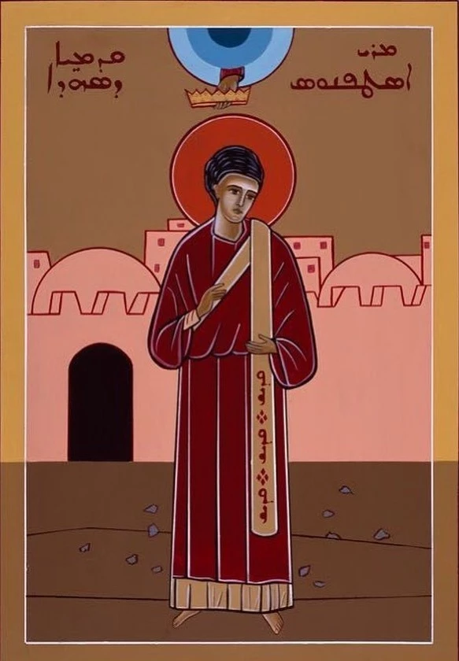

أيام الأسبوع
5:00 مساءً في كنيسة مار اسطفان
أبرشية البترون المارونية
5:00 مساءً في كنيسة مار اسطفان
7:00 و9:00 و10:30 صباحًا في كنيسة مار اسطفان
5:00 مساءً في كنيسة مار اسطفان
القديس اسطفانوس هو أول الشهداء في الكنيسة، وهو مثال للإيمان الثابت والشهادة للمسيح. تكرّم الكنيسة ذكراه وتستلهم من حياته المحبة والغفران والثبات في الإيمان.
اختير اسطفانوس مع الشمامسة الأوائل لخدمة الجماعة، وكان ممتلئًا نعمة وقوة. شهد للمسيح بشجاعة، وبقي أمينًا للإنجيل حتى استشهاده.
تدعونا سيرة القديس إلى عيش المحبة وخدمة القريب، وإلى التمسك بالرجاء حتى في الأوقات الصعبة، والصلاة من أجل من يسيئون إلينا.
تحتفل الكنيسة بذكرى القديس اسطفانوس في 26 كانون الأول، وتبقى شهادته مصدر إلهام للمؤمنين عبر الأجيال.

تاريخ عريق من الإيمان والخدمة في قلب البترون
تأسست رعية مار اسطفان في البترون منذ قرون عريقة، وشهدت تاريخًا حافلًا بالإيمان والعطاء عبر الأجيال المتعاقبة.
نقدّم برامج روحية متنوعة تشمل القداسات اليومية، والصلوات، والنشاطات الكنسية لتعزيز إيمان المؤمنين.
نعمل على خدمة المجتمع المحلي من خلال المساعدات الخيرية والأنشطة الاجتماعية والتربوية المتنوعة.